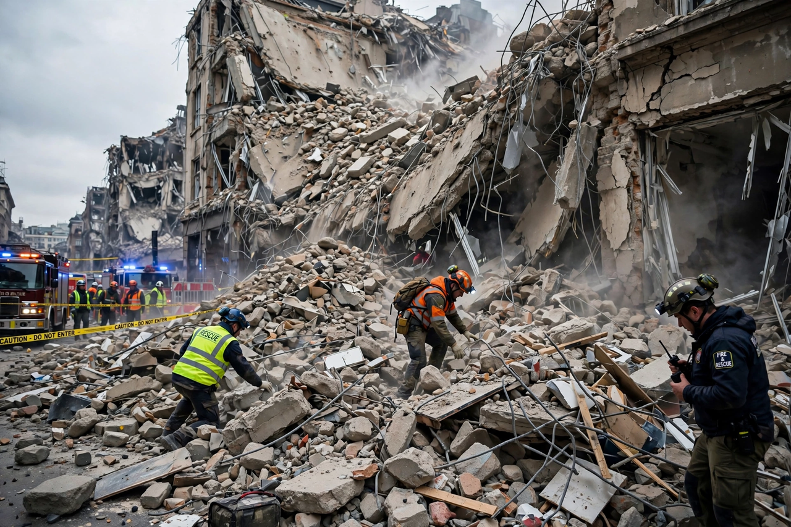

Terrorism, in its broadest sense, is the use of intentional violence and fear to achieve political or ideological aims. The term is primarily used to refer to intentional violence during peacetime or in the context of war against non-combatants (mostly civilians and neutral military personnel). There is no universal legal or academic consensus on its definition, and the label is frequently contested.
Governments and international bodies define terrorism in various ways, usually centring on politically motivated violence against civilians intended to intimidate a population or coerce a government. Scholars note the difficulty of distinguishing terrorism from other forms of political violence, giving rise to the aphorism that "one person's terrorist is another person's freedom fighter".
The word derives from the "Reign of Terror" of the French Revolution. Modern terrorism emerged in the late nineteenth century with anarchist "propaganda of the deed", followed by anti-colonial, left-wing and right-wing campaigns in the twentieth century, and religiously motivated movements from the late twentieth century onward. Major attacks include the bombing of Pan Am Flight 103 in 1988 and the September 11 attacks of 2001.
Terrorist tactics include bombings, assassinations, hijackings, hostage-taking, mass shootings and suicide attacks. States respond with counter-terrorism law, intelligence work, policing and military action, measures that can themselves raise civil-liberties concerns. Researchers study terrorism's causes, strategic logic and effectiveness, finding that groups use it as a strategy of the weak to publicise a cause, provoke overreaction, or outbid rival groups.